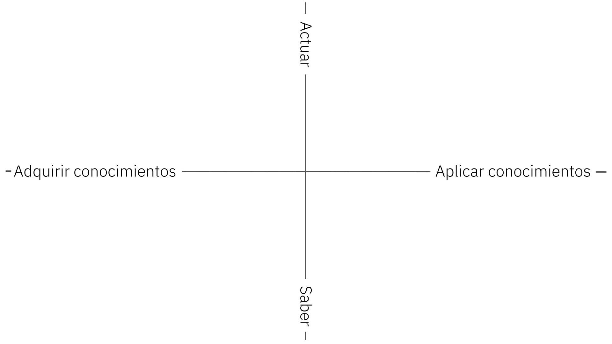
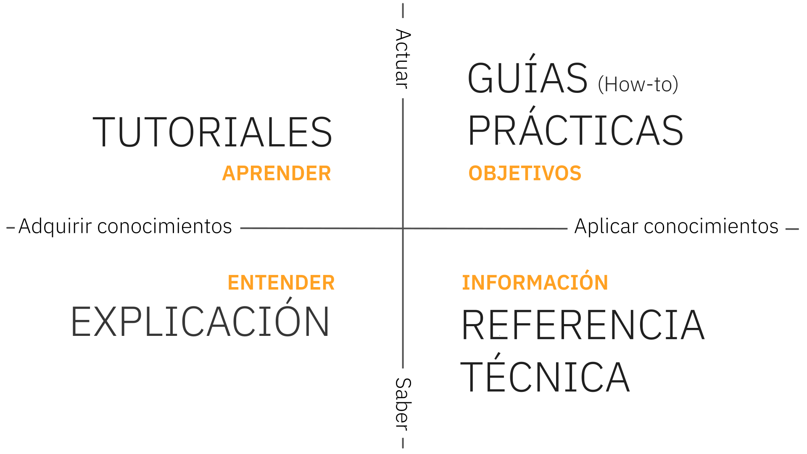
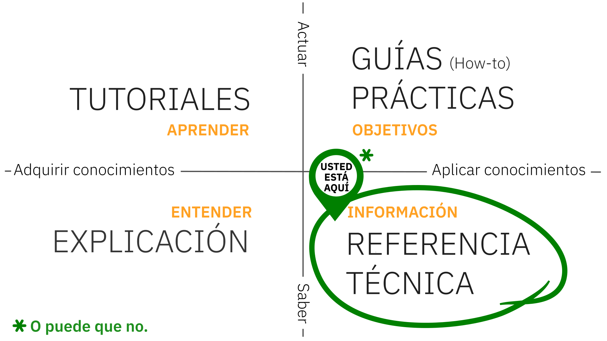

El creador de Diátaxis es Daniele
Procida, y todo lo que se explica en esta presentación,
está mucho mejor y más ampliamente explicado en
https://diataxis.fr/.
La idea central de Diátaxis (1/2)
NO hay un solo tipo de documentación
Existen
cuatro tipos distintos
de documentación que responden a
cuatro necesidades distintas
Estos cuatro tipos son:
tutoriales,
guías prácticas,
referencia técnica y
explicaciones.
La idea central de Diátaxis (2/2)
Cada uno tiene un
propósito diferente y requiere un estilo de redacción específico
Diátaxis prioriza las
necesidades de los usuarios y
estructura la documentación según estas. Cuando un usuario
tiene una necesidad concreta, sabe dónde encontrar la
respuesta.
Al mismo tiempo, esto da a los autores una
orientación
clara para la elaboración de la documentación, señalando
aspectos susceptibles de mejora para que el usuario
disfrute de una mejor experiencia.
Disclaimer
Redactar documentación coherente es complejo, y no toda la
información útil para los usuarios encaja a la perfección en
una de las categorías del marco Diátaxis.
Este modelo ofrece una guía útil y busca aportar cierta
coherencia entre distintos productos de software; sin embargo,
siempre hay casos particulares que no se ajustarán exactamente
a estas categorías.
Ejes de diátaxis

El Exe Y: Acción / cognición
Una habilidad, oficio o práctica comprende
acción (conocimiento
práctico, saber cómo hacer algo) y
cognición (conocimiento
teórico, saber porqué algo es así). Ambos están
íntimamente entrelazados; no obstante, son contrapartes,
dos facetas diferentes de una misma cosa.
El Exe X: Adquisición / aplicacion
Del mismo modo, la relación de un profesional con su práctica
es algo que debe tanto
adquirirse como
aplicarse.
Estar trabajando (centrado en aplicar las habilidades y los
conocimientos propios de su oficio) y estar estudiando
(centrado en adquirirlos) son, otra vez, facetas
complementarias: distintas, pero vinculadas.
Ejes de diátaxis

Usted está aquí

Cada cuadrantes es similar a sus vecinos
Tutoriales y guias prácticas describen pasos prácticos
Guias prácticas y referencias técnicas se necesitan cuando estamos
trabajando
Referencias técnicas y explicaciones son útiles cuando se trata de
adquirir conocimientos teóricos
Explicaciones y tutoriales son necesarios cuando estamos estudiando,
no trabajando.
parecidos entre Tutorial y Guía práctica
A modo de ejemplo
Ambos tiene carácter
práctico: Son instrucciones
que el usuario debe seguir
Su propósito no es explicar ni informar
sino orientar al
usuario sobre qué hacer
Formato similar:
Una serie de pasos que el lector debe
seguir, con la promesa de que llegará a un
resultado satisfactorio.
Diferencias entre Tutorial y Guía práctica
A veces, el usuario está aprendiendo; otras veces,
trabajando. La documentación debe atender ambas
necesidades.
Un tutorial es para
cuando
estamos aprendiendo; su
objetivo es proporcionar una
experiencia
de aprendizaje
exitosa.
Una guía práctica atiende las necesidades del
usuario que
está
trabajando; su propósito es
ayudarle a
realizar una tarea.
Son necesidades y
objetivos
totalmente
diferentes.
Tutoriales (aprendizaje + acción)
Lecciones guiadas que llevan al usuario
de cero hasta un
resultado concreto.
Su propósito es desarrollar
habilidad mediante ejercicios prácticos.
Un tutorial de Diátaxis nunca
mezcla explicaciones
conceptuales profundas ni sirve como referencia
técnica.
Ejemplo: "Crea tu
primera página con
Django en 15 minutos". Será una página muy simple, si.
Guias prácticas o How-to (aplicación + acción)
Resuelven un problema
específico identificado por el usuario.
Asumen un conocimiento
previo (a diferencia de los tutoriales)
y van directo la solución.
Ejemplo: "Cómo incluir una
cookie de sesión usando requests".
Referencia técnica (aplicación + conocimiento)
Documentación
fáctica sobre clases, funciones, APIs,
parámetros, configuración, comportamiento del
sistema
Debe ser precisa,
completa y fácil de escanear.
La consistencia
es un valor añadido muy fuerte.
Ejemplo: "Todas las
APIs publicas de nuestro servicios".
Explicación (aprendizaje + conocimiento)
Aportan contexto, fundamentos arquitectónicos y relaciones
conceptuales.
Responden al "por
qué" detrás de las decisiones
técnicas.
Ejemplo: "Por qué elegimos PostgreSQL para
este proyecto".